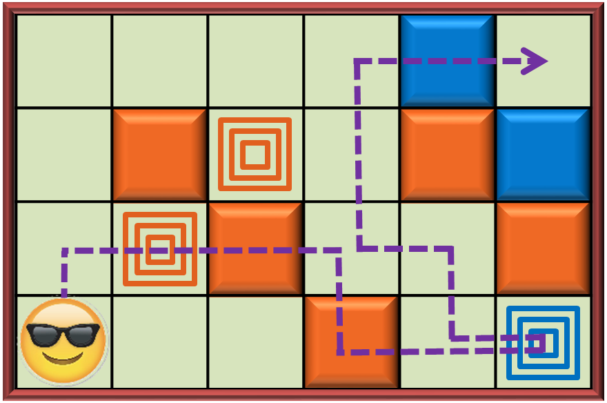

Počítačová hra
V počítačové hře ovládáme postavičku zvanou Tom, která se pohybuje po čtvercové mřížce. Naším úkolem je pomocí přesunů vlevo, vpravo, nahoru a dolů
(ne diagonálně) přemístit Toma z levého dolního rohu do pravého horního rohu. Každý přesun Toma do sousedního pole nazýváme tahem.
V pohybu brání Tomovi barevné překážky (zdi), které se na některých polích mřížky vyskytují.
Zároveň některá pole mřížky fungují jako spínače, které všechny zdi jedné barvy, totožné s barvou spínače, zasunou do země. Pole s takovýmito překážkami
se změní na průchozí a zůstávají v tomto stavu, dokud Tom nevstoupí na spínač jiné barvy B. Když se tak stane, původně zasunuté zdi se opět vysunou a
zasunou se zdi barvy B.
Platí, že na začátku jsou všechny zdi vysunuté. Vysunutí a zasunutí zdí je okamžité. Tom se celým svým objemem vejde do jednoho pole.
Hrací plochu opustit nemůže. Pokud Tom vstoupí opakoveně na spínač jedné barvy, aniž by mezitím navštívil spínač jiné barvy, nestane se nic.
Na výchozím ani cílovém poli není zeď ani spínač. Spínač se nevyskytuje na poli se zdí.
Úloha
Pro danou hrací plochu nalezněte nejkratší posloupnost tahů, která přemístí Toma z výchozí pozice do pozice koncové.
|

Obrázek 1. Příklad hrací plochy rozměrů 4 × 6. Tom je ve své výchozí pozici znázorněn smajlíkem. Jsou přítomné překážky dvou barev - oranžové a modré. Plochy se spínači jsou znázorněné pomocí tří soustředných čtverců stejné barvy. Fialová přerušovaná trasa reprezentuje možný optimální postup, který přemístí Toma s použitím 14-ti tahů do cílové pozice. Vidíme, že po vykonání druhého tahu vstoupí Tom na pole se spínačem oranžové barvy, může se proto ve třetím a pátém tahu přesunout na pole se zasunutou oranžovou zdí. Vzhledem k tomu, že přístup k pravému hornímu rohu blokují dvě modré zdi, je nutno navštívit pole s modrým spínačem. To způsobí, že se modré zdi zasunou, oranžové se ale vysunou a je proto nutné je během zbývajících tahů obejít. |
Vstup
Na prvním vstupním řádku jsou tři celá čísla M, N, C oddělená mezerami.
Číslo M, resp. N je počet řádků, resp. sloupců čtvercové mřížky reprezentující hrací plochu.
Barvy překážek mají identifikátory 1 až C.
Následuje M řádků vstupu, kde i-tý z těchto řádků reprezentuje i-tý řádek čtvercové mřížky pomocí N celých čísel
oddělených mezerami, přičemž číslo 0 reprezentuje prázdné pole, kladné číslo od 1 do C reprezentuje barvu zdi na daném poli
a záporné číslo od −C do −1 reprezentuje barvu spínače na daném poli - spínač, jehož barva má identifikátor
B, je reprezentovaný číslem −B.
Je zaručeno, že cílové pole je dosažitelné.
Platí 1 ≤ M, N ≤ 1000, 2 ≤ C ≤ 10.
Pro prvních 5 public i private instancí platí C = 2.
Výstup
Výstup sestává z jednoho textového řádku, který obsahuje číslo, jež je rovno minimálnímu počtu tahů potřebných na přesun Toma z levého dolního rohu do pravého horního rohu.
Příklad 1
Vstup4 6 2 0 0 0 0 1 0 0 2 -2 0 2 1 0 -2 2 0 0 2 0 0 0 2 0 -1Výstup
14Data a řešení Příkladu 1 jsou vizualizována na Obrázku 1.
Příklad 2
Vstup6 8 2 -1 1 0 0 -1 0 2 0 -1 1 -2 1 0 0 2 -2 0 1 0 1 1 0 2 0 0 0 0 1 0 0 2 1 0 0 0 1 0 2 2 1 0 0 0 1 0 0 0 0Výstup
20
Veřejná data
Veřejná data k úloze jsou k dispozici. Veřejná data jsou uložena také v odevzdávacím systému a při
každém odevzdání/spuštění úlohy dostává řešitel kompletní výstup na stdout a stderr ze svého programu
pro každý soubor veřejných dat.
Veřejná data